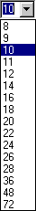
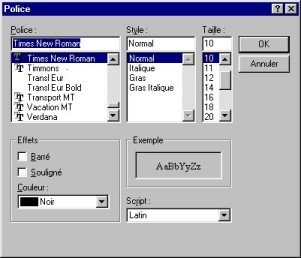

|
Once you have typed your rough draft, you have to format it, that it, adjust the type styles of the characters
and the arrangement of paragraphs which constitute your document. Let us begin by seeing
how to adjust the type style. This can be done:
* By selecting the characters you want to change and applying the new format.
* By applying the format at the insertion point. Unlike the previous method, a formatting command
does not deactivate itself automatically. You will have to deactivate it to resume "normal" format.
If the text you want to format has already been typed, to format one letter, one word, a group of words, or
a paragraph, just select the corresponding characters (as we have already seen in the General chapter) and then:
* Choose the character font by clicking on the little arrow to the right of
the Font command on the Format toolbar and then select the desired font from the list of choices.
|

|
* Choose the font size by clicking on the little arrow to the right of the
Size command on the Format toolbar and then select the desired size from the list of choices. You can
also enter it directly with the keyboard.
|

|
* Put in bold in any of three possible ways:
- Go to the Format menu and then click on "Bold" or
- Click on the "Bold" icon
 of the Format toolbar or of the Format toolbar or
- Use the keyboard shortcut by pressing the "Ctrl" and "B"
keys at the same time.
* Put in italics in any of three possible ways:
- Go to the Format menu and then click on "Italic" or
- Click on the "Italic" icon
 of the Format toolbar or of the Format toolbar or
- Use the keyboard shortcut by pressing the "Ctrl" and "I"
keys at the same time.
* Put in underlined in any of three possible ways:
- Go to the Format menu and then click on "Underline" or
- Click on the "Underline" icon
 of the Format toolbar or of the Format toolbar or
- Use the keyboard shortcut by pressing the "Ctrl" and "U"
keys at the same time.
* Put in overlined in any of three possible ways:
(useful for doctors for example)
- Go to the Format menu and then click on "Overline" or
- Click on the "Overline" icon of the Format toolbar or
- Use the keyboard shortcut by pressing the "Ctrl" and "T"
keys at the same time.
* Put in strikeout in either of two possible ways:
- Go to the Format menu and then click on "Strike" ou
- Cliquer sur l'icone "Strike"
 of the Format toolbar. of the Format toolbar.
* Put in superscript in any of three possible ways:
- Go to the Format menu and then click on "Superscript" or
- Click on the "Superscript" icon
 of the Format toolbar or of the Format toolbar or
- Use the keyboard shortcut by pressing the "Ctrl" and "="
keys at the same time.
* Put in subscript in any of three possible ways:
- Go to the Format menu and then click on "Subscript" or
- Click on the "Subscript" icon
 of the Format toolbar or of the Format toolbar or
- Use the keyboard shortcut by pressing the "Ctrl" and "-"
keys at the same time.
It is of course possible to combine
several formatting commands, such as
bold + italic + underline + strikeout + superscript
All the above commands are recapitulated in
the "Font" dialog box. This dialog box can be accessed in any of three ways:
- Go to the Format menu and click on "Font..." ou
- Click on a word with the right mouse button, then click on the next-to-last option (Font...)
of the context menu or
- Use the keyboard shortcut by pressing the keys "Ctrl"
and "D" simultaneously.

All the preceding formatting commands are collected here, and in addition:
* The choice of color. For that, click on the little arrow to the right of the
Color command in the Effects box and then select the desired color from the list of choices. In Unix this is on a separate tab,
and you can adjust the hue, saturation, and value, or the red, green, and blue components, independently.
* The choice of scripts for different languages
for the specified font. For that, click on the little arrow to the right of the
Script command (Encoding in Unix) and then select the desired script from the list of choices.
In addition, in the "Example" box you can see what text will look like in the selected font. Once you
have selected the attributes, confirm by clicking on the OK button or click on the Cancel button to
discard the modifications.
|